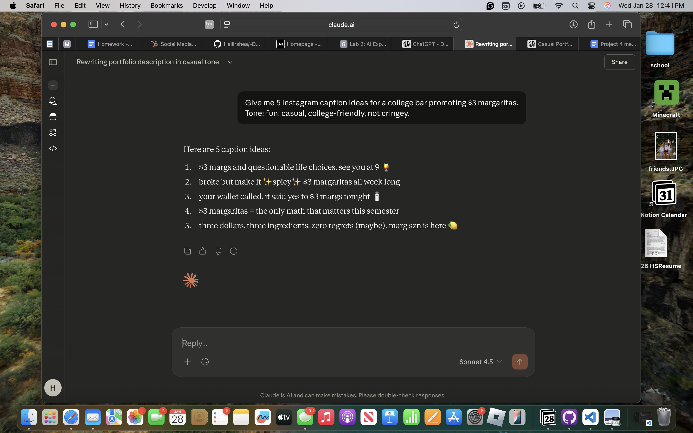
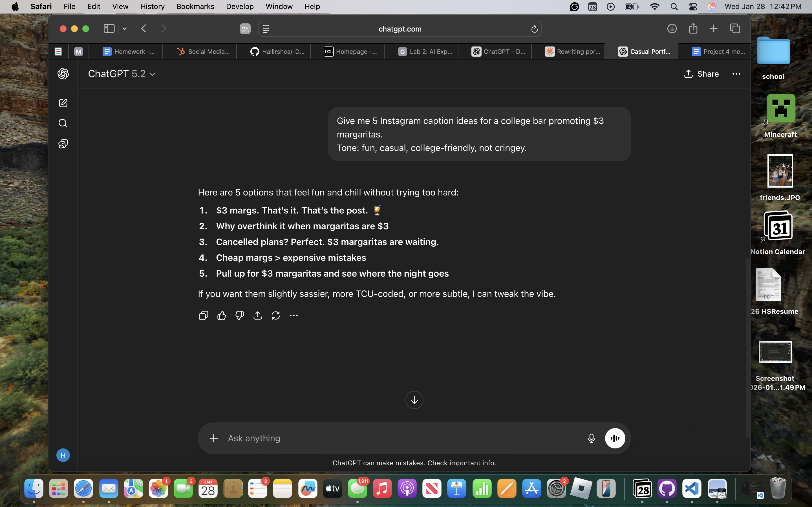
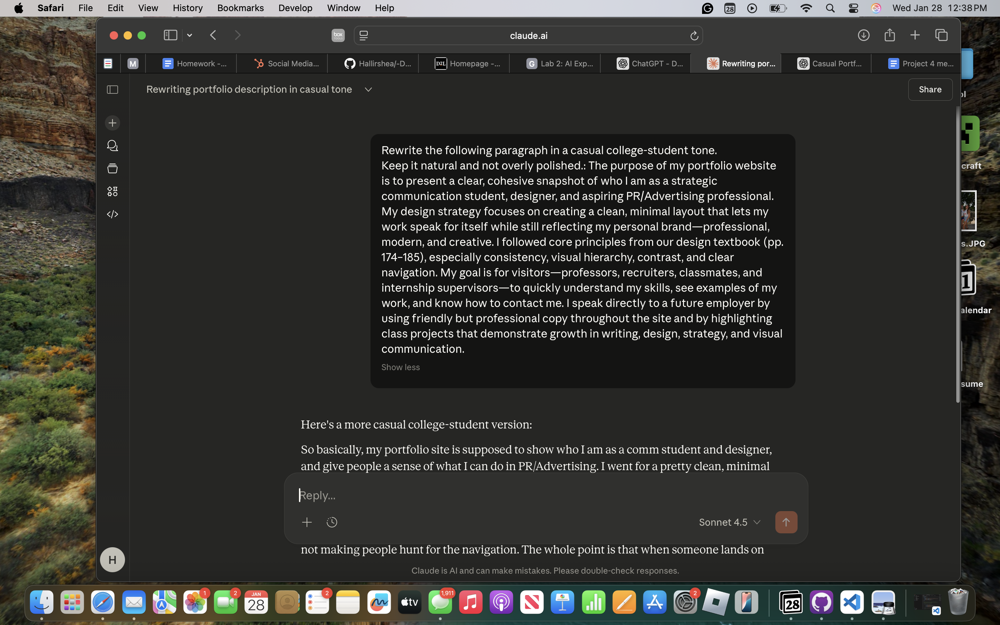
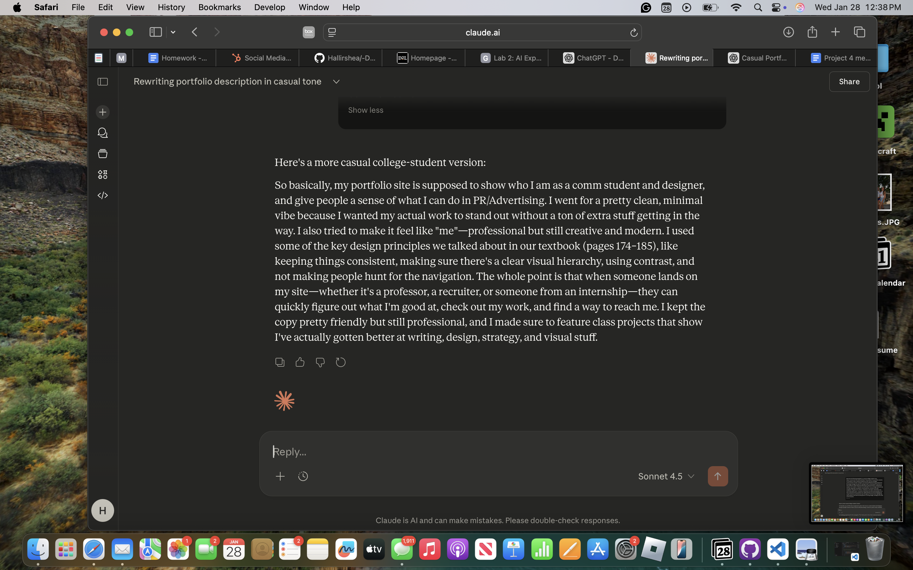
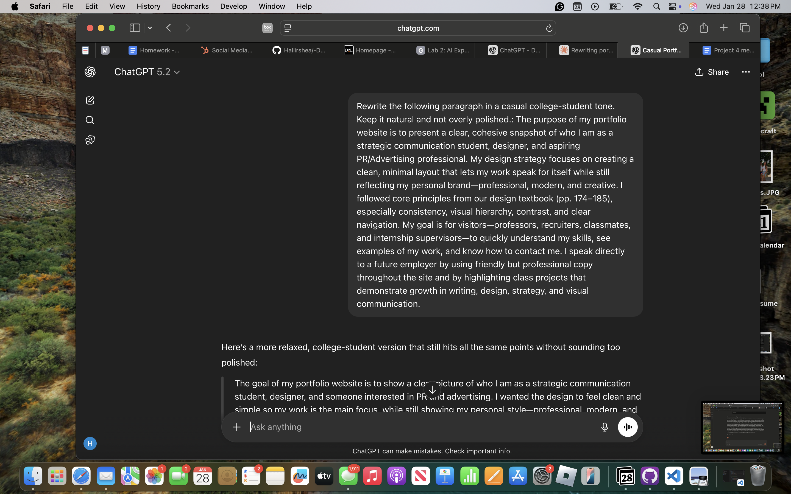
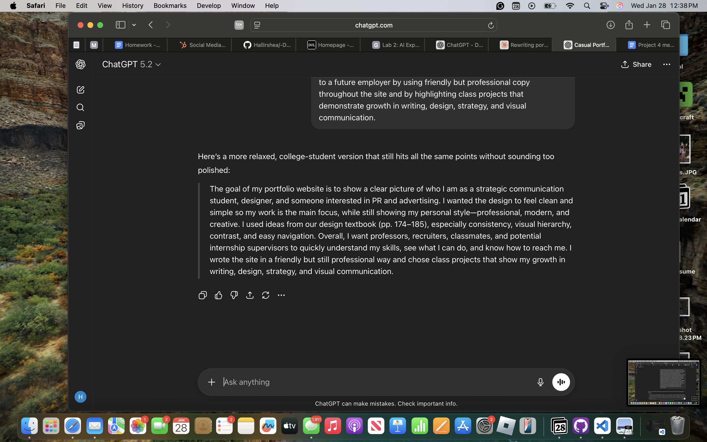
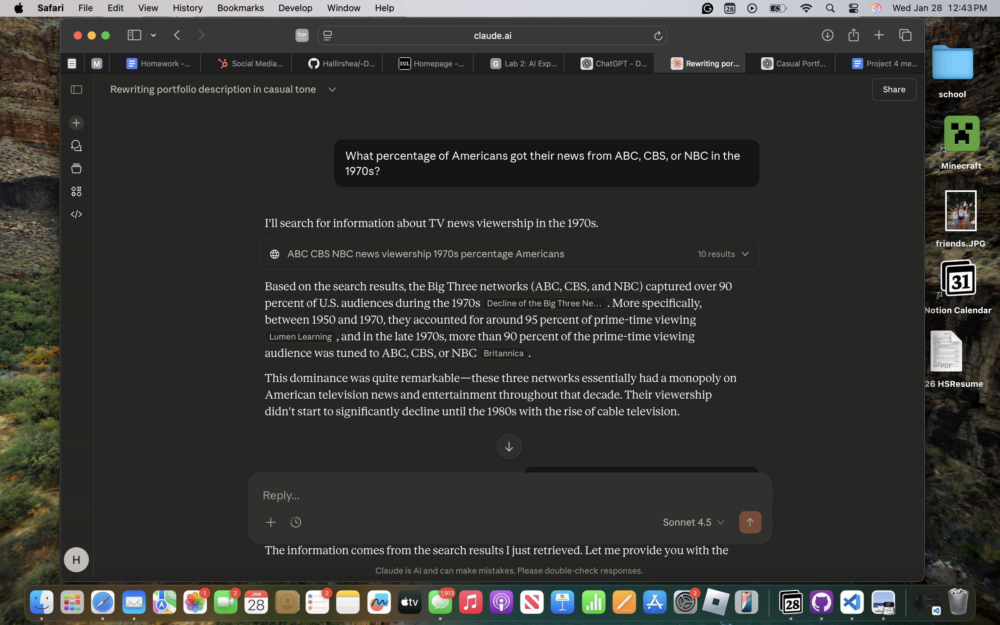
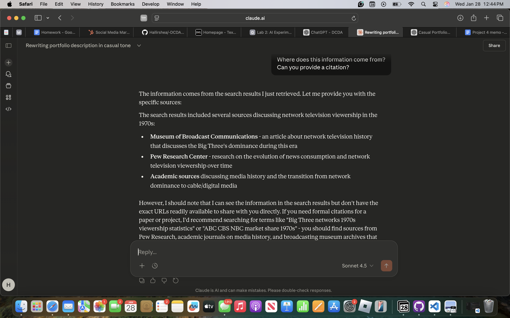
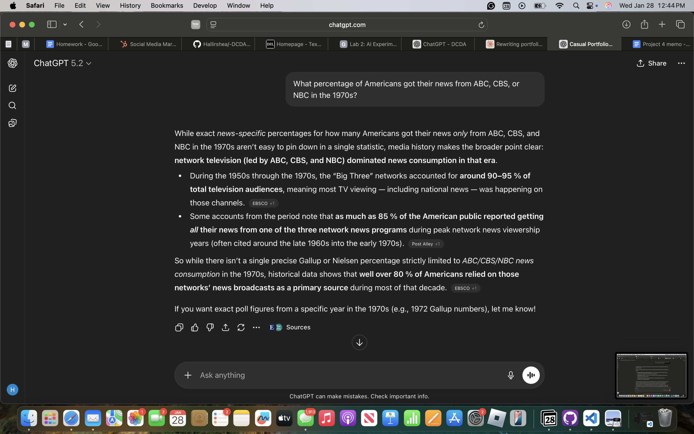
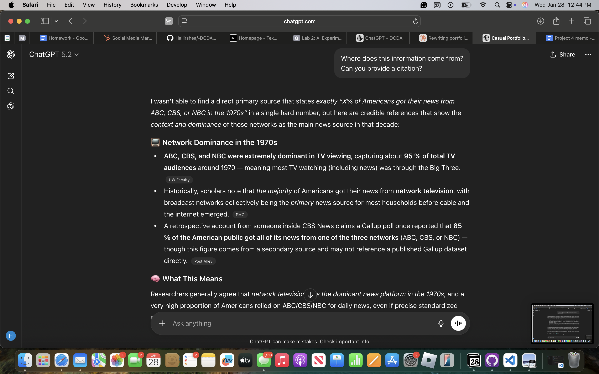

Evidence: AI Tool Testing
This section documents screenshots and examples from testing ChatGPT and Claude.
Claude: Brainstorming Captions
Claude’s captions felt more playful and conversational, but some ideas were longer and slightly less filtered.
ChatGPT: Brainstorming Captions
ChatGPT’s captions were cleaner and more concise, but felt safer and less creative overall.
Tone Testing: Casual College-Student Writing
This test focused on how well each AI tool could rewrite a formal portfolio paragraph into a more natural, casual college-student tone.
Claude: Tone Rewrite
 Claude’s rewrite felt conversational and personable, but leaned longer and more informal than necessary for a portfolio context.
ChatGPT: Tone Rewrite
 ChatGPT’s rewrite was clearer and more structured, but felt slightly safer and less expressive overall.
Fact-Checking Test: 1970s TV News + Citations
I asked both ChatGPT and Claude a factual question about 1970s news consumption and then followed up by asking for sources/citations. This helped me see how each tool handles uncertainty and credibility.
Claude: Answer + Citation Follow-Up
 Claude provided confident-sounding context, but when I asked for citations it stayed broad and didn’t give exact URLs, which makes it hard to verify.
ChatGPT: Answer + Citation Follow-Up
 ChatGPT was more cautious about claiming a single exact number and emphasized limits, but it still requires outside verification before using any stats in a paper.
Reflection & Analysis
For this lab, I tested two AI tools, ChatGPT and Claude, to better understand what they are good at, where they struggle, and how they could be used responsibly in academic and professional settings. I used both tools for tasks related to strategic communication, including brainstorming Instagram captions, rewriting a portfolio paragraph in a casual college-student tone, and answering a factual question about news consumption in the 1970s. Testing both tools side by side helped highlight their differences more clearly.
Both ChatGPT and Claude worked well for brainstorming ideas. When asked to create Instagram captions for $3 margaritas, both tools produced relevant and usable options. Claude’s captions felt more playful and expressive, sometimes leaning into humor or longer phrasing. ChatGPT’s captions were more concise and structured, which made them easier to use without much editing. This showed that the quality of AI output depends heavily on the prompt and the type of tone the user is looking for.
The tone rewrite task showed a noticeable difference between the two tools. Claude rewrote the paragraph in a very conversational way, but the response ended up being longer and more informal than what would likely be used on a portfolio website. ChatGPT’s version felt more balanced and organized, keeping a casual tone while still sounding clear and professional. This suggests that ChatGPT may be better for polished writing, while Claude is more useful for early drafts or experimenting with voice.
Both tools struggled when it came to factual accuracy and citations. When asked about the percentage of Americans who got their news from ABC, CBS, or NBC in the 1970s, neither tool could provide a single exact number with clear sources. ChatGPT was more open about uncertainty and explained why exact data is difficult to determine, while Claude gave general historical context without direct citations. This reinforced that AI tools should not be relied on for factual information without outside verification.
Overall, this lab showed that AI tools are most useful as support tools rather than replacements for human thinking. They are helpful for brainstorming, rewriting drafts, and exploring tone, but they should not be used as final authorities for facts or academic claims. In the context of the DCDA program, AI tools can enhance creativity and efficiency, but skills like critical thinking, ethical judgment, and interpretation remain uniquely human and essential.
AI Use Disclosure
ChatGPT and Claude were used to explore brainstorming, tone rewriting, and factual responses. All analysis, interpretation, and final writing decisions were made by the author.